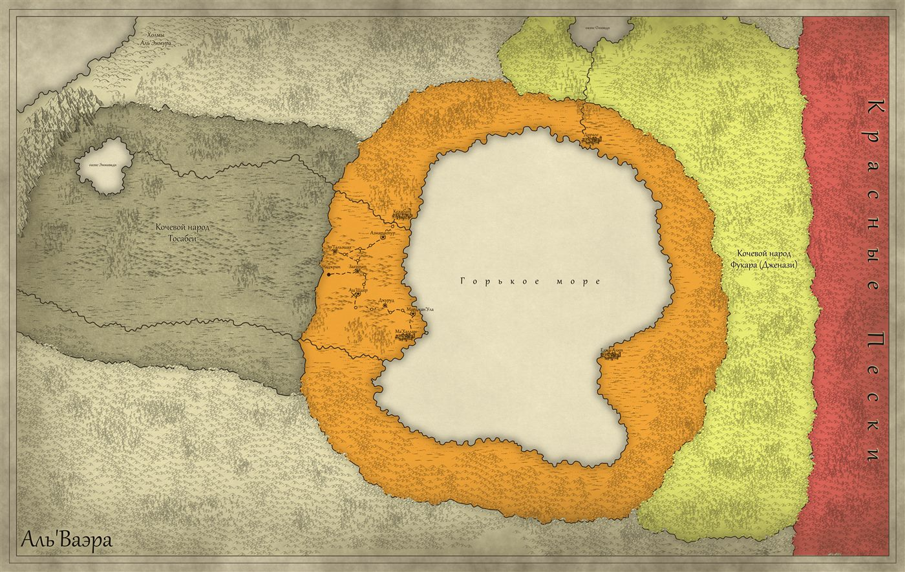

Пустыня, что помнит всё
Представь себе место, где само понятие «жизнь» — это вызов, брошенный безжалостному небу. Аль'Ваэра не просто пустыня. Она — живое, дышащее существо, чьи лёгкие — барханы, а кровь — иссохшие русла рек, что помнят воду тысячелетней давности. Здесь солнце не просто светит — оно царит. Оно выжигает ложь, оставляя только правду: правду песка, правду камня, правду тех, кто сумел выжить в этом раскалённом горниле.
| Расположение | Великая пустыня мира Орвей; на севере и западе её границы упираются в горы Дакья и холмы Аль'Эммура, на востоке — Красные Пески |
| Крупные города | Кехабат, Ма'Халлам, Еджа-Алит, Дирале (города-государства Аль'Махребии), Аш'Шахр |
| Доминирующие расы | Ваэрны, махребы, дженази, акрабимы, тосабеи, хушиты, шуалы |
| Религии | Джа'Илам (вера в единого Творца), Пантеон (Ахурамазда, Фатима, Четверо, полубоги) |
Днём мир превращается в мираж. Воздух дрожит так сильно, что граница между небом и землёй стирается, и путник идёт, сам не зная, идёт ли он по песку или по облакам. Горизонт плавится и течёт, как расплавленное стекло, а каждый вдох напоминает, что ты — всего лишь гость в доме, который построил огонь.
Ночью пустыня сбрасывает маску. Звёзды здесь ближе, чем где-либо. Они висят так низко, что кажется — протяни руку, и пальцы коснутся холодного света. Луна Фатимы разливает серебро по барханам, превращая пустыню в застывшее море. И в этом море, в этой тишине, рождаются шепоты — древние, как сам мир. Говорят, по ночам пески поют. Говорят, в их песне можно услышать голоса тех, кто был до нас: царей Уруда, что возомнили себя богами; пророков, что искали истину в раскалённых камнях; простых кочевников, что смотрели в те же звёзды и гадали, есть ли за ними что-то большее, чем просто свет.
Аль'Ваэра — это земля контрастов. Здесь города вырастают из песка, как диковинные цветы, орошаемые кровью рабов и потом ремесленников. Их стены высоки, но пустыня выше. Их амбиции безграничны, но пустыня безграничнее. Ма'Халлам пылает вечными огнями, Кехабат молится единому Творцу, Еджа-Алит считает золото, а Дирале прячет в своих трущобах такие тайны, за которые можно и умереть.
А вокруг — кочевники. Тосабеи, чьи рога венчают головы воинов, помнящих каждую клятву, данную под звёздами. Хушиты, чьи глаза видят не только настоящее, но и то, что было, и то, что лишь грядёт. Шуалы, чей смех звенит монетами на базарах, а хитрость не знает границ. Акрабимы, чьи когти создают красоту, а жала хранят тайны ядов и лекарств. И все они — ваэрны, дети пустыни.
И среди всего этого — люди. Те, кто строил города, и те, кто бежал от них. Те, кто молится старым богам, и те, кто нашёл новую веру. Те, кто ищет правду, и те, кто знает, что правда — это всего лишь ещё одна грань миража.
Потому что правда Аль'Ваэры в том, что здесь ничего не исчезает бесследно. Всё остаётся в песке. Руины Уруда, великой столицы, что бросила вызов небу, до сих пор лежат где-то под Красными Песками. Их золото не блестит, их сады не цветут, но они ждут. Как ждут дети Фатимы — те, чьи имена шепчут с ужасом у костров. Как ждут полубоги, чья кровь течёт в жилах народов, что населяют эту землю. Говорят, однажды пески сдвинутся. Говорят, ветер переменится, и то, что было забыто, вернётся. И тогда каждый, кто носит в сердце искру пустыни, должен будет сделать выбор. Но это лишь легенды. А пока — солнце встаёт над барханами, ветер гонит песок, стирая следы вчерашнего дня, а караваны собираются в путь. Добро пожаловать в Аль'Ваэра. Пустыня ждёт.

Великая пустыня раскинулась, словно опалённая солнцем империя, где царствуют два лика стихий. На севере и западе её границы упираются в горы Дакья и холмы Аль'Эммура, за которыми, по слухам, лежит великий океан. Истинное сердце Аль'Ваэры бьётся там, где пустошь тянется от зазубренных пиков до холмов, похожих на спящих каменных великанов. Это царство контрастов: не только зыбучие дюны, взметающиеся к небу золотыми волнами, но и скалы, изрезанные временем, словно морщины на лице древнего божества. Ущелья здесь обрываются в пропасти, а плоскогорья напоминают алтари, залитые ослепительным светом. Лишь редкие колодцы, спрятанные меж камней, мерцают, как слёзы земли, — сокровенные дары для тех, кто знает язык песков.
Племена, что зовут эти земли домом, танцуют на грани между жизнью и гибелью. Они читают пустыню, как свиток: находят трещины в камнях, где влага прячется от солнца, хранят финики в тени пещер, чьи чертоги уходят вглубь, как корни мироздания. Когда небо разверзается коротким ливнем, подземные лабиринты оживают — здесь, в прохладных объятиях камня, рождаются легенды о выживших. Но даже дожди здесь — лишь мимолётный шёпот милости в вечном гимне пустыни к жаре.
В самом сердце Аль'Махребии раскинулось Горькое море — внутренний солёный водоём, чьи воды связывают все четыре города-государства. На языке древних ветров его зовут Кайло Кахно, что значит «Море, что не утоляет жажду». Его бескрайние волны, мерцающие лазурью и солью, кажутся океаном среди песков, но вода здесь непригодна для питья. Рыбаки, чьи лодки скользят по зеркальной глади, ловят диковинных существ меж водорослей. Море играет важнейшую роль в торговле: по нему ходят суда, связывающие порты четырёх городов. На дне, говорят, покоятся руины ещё более древних поселений, но никто не рискует нырять слишком глубоко.
Вокруг Горького моря, словно четыре стража, стоят города-государства Аль'Махребии. Каждый из них уникален — своей историей, архитектурой, народом и предназначением. Вместе они образуют конфедерацию, скреплённую торговлей и общей угрозой кочевников, но внутри каждого кипят свои страсти, интриги и тайны.
«Здесь говорят с богами и судят царей». Кехабат раскинулся на северо-западном берегу Горького моря, там, где река Мезсабхар впадает в солёные воды. На месте современного города люди селились с незапамятных времён: уже три тысячелетия назад здесь стояли первые глинобитные дома, а позже возникло поселение Соль, служившее пристанищем для беженцев и торговцев. Настоящим городом оно стало лишь пять веков назад, когда вождь Якуб Кехаб аль-Мансур объединил окрестные племена, обнёс поселение стеной и дал ему своё имя. Два столетия спустя Кехабат заключил союз с Ма'Халламом, и вместе они создали Аль'Махребию — царство, где песок встречается с волной.
Город — полотно, вышитое камнем и золотом. Каждый султан оставлял здесь след: мечети с позолоченными куполами, фонтаны, поющие под звёздами, статуи, застывшие в вечности. Касбах-дез-Урегис — гигантская крепость на холме, чьи красные стены, говорят, пропитаны кровью мятежников. Мечеть Енхатьяка — исполин из камня и света, чьи минареты пронзают облака; говорят, десять тысяч рук семь лет строили её. Большой базар раскинулся на двух квадратных милях: здесь можно купить всё — от пряностей до рабов, от артефактов Уруда до зелий из Лунного кактуса. Здесь же находится Великий Храм Джа'Илама, откуда имамы распространяют свою веру, и гробница Пророка под куполом из розового мрамора.
Кехабат — столица конфедерации. Формально верховная власть принадлежит Великому султану, но реально городом управляет сложная система советников, каидов и имамов. Сегодня трон принадлежит Алхану Кведу Меер-аджаху Салуману, сыну Великого султана. Реальная власть в Кехабате принадлежит не только султану, но и тайным силам — Синдикату, религиозным лидерам и купеческим гильдиям, чьи интересы часто переплетаются. Население города — потомки зената и осевших кочевников: коренные кехабатцы — словно бледные тени пустыни, зеленоглазые, с рыжими или пепельными волосами; дети кочевников выше, с тёмными глазами и чёрными волосами. Всех объединяет гордость и набожность.
«Там, где камни помнят огонь, а джинны ходят среди смертных». Ма'Халлам был построен не человеческими руками, а волей и колдовством. Давным-давно здесь находился портал между миром смертных и Потусторонними землями — источник всей магической силы. Город возвели на белой земле, пропитанной магией, и даже сегодня его двойные башни визирей возвышаются над горизонтом, видные далеко за стенами.
Ма'Халлам стоит на юго-западном берегу Горького моря. Земля здесь мелово-белая, и, по легенде, под городом покоится древняя королева джиннов, пьющая кровь, которая просачивается сквозь почву. Когда она насытится, портал в Страну Огня и Колдовства откроется вновь. Город спланирован с небесной гармонией — широкие улицы, белые здания, фонтаны, питаемые глубокими подземными источниками. Карах-эль («Два шпиля») — высокая арка и два шпиля визирей, где собираются маги Ма'Халлама и хранятся библиотеки с секретами поколений — как смертных, так и джиннов. У основания башен, глубоко под землёй, находится запечатанный Портал Огня и Колдовства — древняя трещина между мирами. Ракешианские бани — самые знаменитые хаммамы во всей Аль'Ваэре, где гостям подают изысканные яства прямо в тёплых бассейнах.
Ма'Халламом правит Совет Великих Визирей, состоящий из четырёх самых могущественных магов. Каждый из них — дженази, потомок стихий. Они курируют различные сферы: промышленность, водоснабжение, строительство, торговлю. Простые жители побаиваются визирей и избегают их, закрывая лица при встрече. Жители Ма'Халлама — краснокожие люди, что отличает их от остальных племён; легенды объясняют это либо древними связями с джиннами, либо свойствами местной земли и воды.
«Здесь всё продаётся, включая душу». Более двух с половиной тысячелетий люди населяют скалистый полуостров, вдающийся в Горькое море. Этот порт видел десятки цивилизаций и, по легендам, выдержал даже ярость короля джиннов. Тёмно-красные стены Еджа-Алита словно вырастают из вулканической породы — им не страшны ни волны, ни ветры, ни осады. Город всегда был независим и управлялся одной лишь силой денег: здесь не важны ни происхождение, ни религия, ни мораль. Еджа-Алит торговал со всеми, принимал всех и продавал всё.
Сам город вырублен в скалах потухшего вулкана — его улицы уходят вглубь, образуя лабиринт пещер и гротов. Северная, самая высокая часть — престижный район; чем ниже, тем беднее жители. Некоторые проводят всю жизнь в пещерных домах, ни разу не увидев океана, но свет проникает через многочисленные вентиляционные отверстия. В Доме колонн, под стеклянной крышей, заседает олигархия, вершится «правосудие» и заключаются сделки. Формально городом правит наиб, но реальная власть принадлежит олигархии из пяти картелей, контролирующих торговлю, судоходство и военные интересы. Город опасен, хищен и тёмен: рабство — обычное дело, на гладиаторских аренах льётся кровь, а на базарах торгуют наркотиками и артефактами сомнительного происхождения.
«Даже руины здесь хранят тайны». Дирале — самый маленький из четырёх городов, но с богатейшей и трагической историей. Когда-то им правила благородная династия, но междоусобицы, гражданские войны и нашествия превратили город в развалины. Город переходил из рук в руки, им правили «ложные короли», принцы-торговцы и шейхи племён. Около сорока лет назад, когда Кехабат и Ма'Халлам образовали Аль'Махребию, Дирале был завоёван и включён в состав конфедерации. С тех пор правителем назначается один из младших сыновей Великого султана. Но ни один из них не оставляет наследников — поговаривают о проклятии или тайном восстании.
Дирале расположен на северо-восточном берегу Горького моря, на песчаных дюнах. Город не имеет естественных скальных укреплений, поэтому его защищает лишь крепость — Хасба. Узкая река Уэд-Фес («Разбитая река») течёт через Дирале к морю, питая поля и горожан. Архитектура хаотична: роскошные мраморные здания соседствуют с палатками и развалинами. Здесь находятся старейшее кладбище Джа'Илама, уникальные водяные часы на центральной площади и Разрушенный квартал — лабиринт из палаток, руин и кривых проходов, где прячутся воры и отщепенцы. Три четверти жителей Дирале исповедуют Старую веру, что создаёт напряжение с правителем-джа'иламитом. Экономика города держится на сельском хозяйстве — более половины продовольствия для конфедерации поступает из провинций Дирале.
«Вода помнит того, кто её подарил». Аш'Шахр стоит в самом сердце караванных путей, на перекрёстке, где сходятся дороги с севера на юг и с запада на восток. Город среднего размера, не такой величественный, как Кехабат, и не такой таинственный, как Ма'Халлам, но у него есть то, чего нет у других, — Священный Фонтан, сердце и душа этого места. Легенда гласит, что много веков назад Великий Визирь Ма'Халлама по имени Мавлид почувствовал под песками мощный источник магии и, не желая пробуждать неведомую силу, перенаправил её энергию, заставив питать подземные воды. Так родился Священный Фонтан, вокруг которого вырос оазис, а затем и город. Вода фонтана считается благословенной, и паломники приходят сюда, чтобы напиться и унести с собой фляги с «водой Мавлида». Каждый год в честь Мавлида горожане зажигают тысячи фонариков и празднуют Ночь Мавлида — ночь, когда вода пришла в пустыню. Город находится под властью наиба Ма'Халлама, но так удалён от него, что на практике живёт своей жизнью.
Путь Визирей — главный караванный маршрут, связывающий север и юг Аль'Ваэры. Он пролегает достаточно далеко от Горького моря, пересекая каменистые равнины и пустынные пространства, граничащие с землями тосабеев. Весь путь питается подземными источниками, стекающими с гор Дакья: каждый караван-сарай и каждый город стоит над древней водной жилой, без которой жизнь здесь была бы невозможна. Путь начинается в Кехабате и заканчивается в Ма'Халламе, а вдоль всей дороги через равные промежутки расположены караван-сараи. Среди точек пути — караван-сарай «Семь Пальм» с Колодцем желаний, город Азмарактур, где добывают бирюзу, игорный дом «Золотой Скорпион» в Захирате, палаточный «Шёпот Барханов», принадлежащий табору шуалов, и «Серебряный Сатин» акрабимов, где можно услышать легенды о Золотом Улье.
Красные Пески — самое сердце пустыни, место, где даже бывалые кочевники стараются не задерживаться. Они дышат. Медленно, тяжело, как грудь спящего титана, вздымаются алые дюны, чьи гребни плавятся в мареве, словно языки застывшего пламени. Говорят, где-то под Красными Песками покоятся руины Уруда — великого города, бросившего вызов богам. Многие искали их, но никто не нашёл: пески ревниво хранят свои тайны.
Горы Дакья вздымаются к западу от Аль'Махребии. Их пики пронзают небо, словно клыки забытого бога, а склоны покрыты вечными тенями. В горах обитают фаскиры — таинственный народ с чёрной кожей и серыми глазами, потомки переживших падение Уруда. Здесь гнездятся соколы, чьи перья ценятся лучниками, и растёт священный Аль'Таис — растение с серебристыми листьями, чей сок исцеляет от самых сильных ядов. В пещерах Дакьи, по легендам, спрятаны сокровища Уруда, но мало кто отваживается искать их.
Холмы Аль'Эммура простираются к северу от Аль'Махребии — каменистая гряда, где ветер воет песни мёртвых. Здесь кочевники иногда находят артефакты Уруда — осколки древних механизмов, монеты с изображением льва, обломки статуй. Местные племена считают эти холмы проклятым местом, полным духов и ловушек, а в расщелинах прячутся фаскиры, предпочитающие уединение и тишину.
Всё, что рассказывают об истории Аль'Ваэры, — не летопись, не свод дат и имён. Это то, что шепчут старики у костров, то, что поют сказители на базарах, то, что матери рассказывают детям, чтобы те знали: мир не всегда был таким, как сейчас. Истина утонула в песках, но эхо её всё ещё живёт в легендах.
Говорят, что в незапамятные времена Аль'Ваэра была иной. Не той бескрайней пустыней, что мы знаем сегодня, а землёй, где вода была столь же обычна, как песок ныне. Старики в племенах тосабеев передают из уст в уста странные слова: «Там, где ныне ветер гонит барханы, когда-то шумели деревья, чьи вершины касались облаков». В ту пору, говорят, Уруд — Первый Город — стоял не среди песков, а среди зелени. Его висячие сады, возведённые царём Навуходоносором Третьим для своей возлюбленной Амитис, были так прекрасны, что сама Фатима, как шепчут, плакала от зависти, глядя на них с небес. Воды в Уруде было столько, что город не знал жажды: подземные реки питали его, а сложные механизмы поднимали влагу к самым верхним террасам. Люди тех времён не молили о дожде — они повелевали водой. И, как говорят, возгордились.
Цари Уруда перестали приносить жертвы Ахурамазде на рассвете и забыли имена Четверых. Они решили, что их могущество — от них самих, что они не уступают богам ни в мудрости, ни в силе. Некоторые легенды утверждают, что они даже пытались проникнуть в тайны, что не предназначены для смертных, — те самые тайны, что когда-то использовала Фатима в своём запретном ритуале, породившем Семерых. Говорят, именно тогда в Уруде впервые заговорили о Философском Камне — артефакте, способном даровать бессмертие и власть над самой материей. И пятеро Великих Визирей, самых могущественных и амбициозных, взялись за его создание. Что произошло дальше — точно не знает никто, но все сходятся в одном: в ту ночь Уруд пал.
Говорят, что гнев Четверых был ужасен. Анлиль собрал все ветра, что только есть в поднебесье, и закрутил их в единый смерч. Син вдохнул в этот смерч огонь, раскалив его добела. Энхиду наполнил его водой, что рвёт камни своей яростью. А Павти встряхнула землю так, что горы сдвинулись с мест. Так родился Вихрь Шамаля — ураган, каких мир не видел ни до, ни после. Он обрушился на Уруд в тот самый час, когда Визири завершали свой ритуал. Когда же буря стихла, Уруда больше не существовало. Но самое страшное случилось потом: Вихрь Шамаля не просто уничтожил город — он изменил саму землю. Там, где прежде шумели леса и цвели сады, осталась лишь выжженная пустыня. «Пустыня — это шрам, — говорят кочевники. — Шрам, который земля носит в память о гордыне людской».
Когда Ахурамазда увидел, что натворили его дети, он разгневался на них — не на людей, они уже были наказаны, а на Четверых, чья ярость уничтожила целый мир. Он заточил каждого из них в отдельном измерении — в мирах чистой стихии, откуда они не могли больше влиять на дела смертных напрямую. Анлиль был заточён в царстве бесконечного ветра, Син — в мире огня, Энхиду — в бездонном океане, Павти — в недрах первозданной земли. Говорят, что сам он тоже покинул мир, оставив людей наедине с их судьбой, и лишь Фатима осталась наблюдать за происходящим с ночного неба. Что же до пятерых Визирей, что затеяли ритуал, — они не погибли. Говорят, они стали фаскирами — существами, что уже не люди, но и не боги: их кожа почернела, глаза стали бездонными, а сами они ушли в тень, скрываясь от людских глаз.
Люди, что выжили после падения Уруда, разбрелись по свету. Одни ушли на запад, где ещё оставалась вода и земля не была столь бесплодна. Другие остались в пустыне, научившись жить в согласии с ней, и стали теми, кого мы ныне зовём кочевниками. Те, кто ушёл к воде, основали поселения, которые спустя тысячелетия разрослись в города — Кехабат, Ма'Халлам, Еджа-Алит, Дирале. Долгие века они оставались небольшими, и лишь в последние столетия превратились в могучие центры торговли и власти. Те же, кто остался в песках, сохранили память о древних богах. «Города построены на костях Уруда», — шепчут старейшины тосабеев. — «И когда-нибудь пески поглотят их так же, как поглотили Первый Город».
Прошли века, и в городах, что выросли на костях Уруда, родилась новая вера — Джа'Илам, учение о едином Творце, что отвергло старых богов и их распри. Так и живут два мира бок о бок, но не вместе. Города, окружённые стенами, молятся Творцу и копят богатства. Кочевники, вольные как ветер, хранят старые легенды и ждут часа, когда пески сдвинутся. Иногда они встречаются — на базарах, у перекрёстков караванных путей, в редких оазисах. Иногда торгуют, иногда ссорятся. А иногда — убивают друг друга. И над всем этим — пустыня. Бескрайняя, равнодушная, вечная. «Смотри на барханы, — говорят старики. — Видишь, как ветер стирает следы? Так и время стирает всё».
Хотя сам Уруд погребён под Красными Песками, следы его величия можно найти по всей пустыне. Иногда караваны находят странные артефакты — механизмы, что работают без огня, камни, светящиеся в темноте, монеты с изображением льва, каких ныне не чеканят. Некоторые утверждают, что видели руины на горизонте, но когда подходят ближе — те исчезают, словно мираж. Другие клянутся, что слышали по ночам музыку, доносящуюся из-под песка, — будто висячие сады Уруда всё ещё цветут где-то глубоко внизу. Но те, кто ищут Уруд слишком настойчиво, назад не возвращаются. Пустыня ревниво хранит свои тайны.
Две веры делят сердца Аль'Ваэры. В городах, где выросли стены и копится золото, правит Джа'Илам — строгая вера в единого Творца. В шатрах кочевников и в трущобах Дирале живёт Пантеон — древние боги, что создали этот мир и разрушили Уруд. Между ними — вековой спор, и ветер по-прежнему заметает следы и тех, и других.
«Нет бога, кроме Него, и нет власти, кроме Его воли». После того как старые боги явили миру свою силу и свою слабость, после того как Уруд пал, сожжённый гневом Четверых, — люди искали ответы. И тогда в мир пришёл Джа'Илам — вера в единого Творца, не имеющего ни лица, ни имени, кроме одного: Он есть. Его не изображают на фресках и не высекают в камне. Его присутствие жжёт, как солнце в зените, но Его лик не увидит никто. Последователи Джа'Илама не молятся в привычном смысле — они падают ниц, сливаясь с пылью, ибо знают: пред Ним любая гордость — прах.
Священный текст Джа'Илама — Рухбат, свод шести истин, рождённый не людьми, а самим дыханием Творца. Архангелы — вестники Творца, сотворённые из чистого света, — прошептали его первому пророку в час, когда пустыня содрогалась от бури. Шесть истин Рухбата: Единство (нет бога, кроме Него), Вестники (ангелы, чьи крылья — пламя), Откровение (Рухбат — живой ветер, разносящий истину), Пророки (мосты между землёй и Творцом), Суд (день, когда пески поглотят всех, кто смел усомниться) и Предопределение (судьба — дорога, вымощенная Творцом).
Первым пророком был Халаджхим, простой каменщик из города Соль, стоявшего на перекрёстке караванных путей. В час, когда над пустыней взошла кровавая луна, на него снизошло озарение. «Вера — крепость, — говорил он толпам. — А каждый из вас — кирпич в её стенах. Старые боги разделили мир, они посеяли хаос и тьму. Но Творец един, и в единстве этом — спасение». Город Соль, где покоится его прах, был переименован в Кехабат — «Врата Творца». Сегодня это столица веры, место, куда стекаются паломники со всей Аль'Ваэры. Символ Джа'Илама — золотой круг без узоров, напоминающий: Творец не имеет образа, ибо любой образ был бы ложью.
Среди последователей Джа'Илама есть те, кто посвятил жизнь не только молитве, но и защите веры. Гази — «живые клинки Творца»: воины в белых одеждах, выбеленных солнцем до хрустальной прозрачности. Их отряды подчиняются не правителям, а имамам. Бакагази — их тёмная тень: изгои веры, смертники, сокрытые в подземельях мечетей, чьи тела, изувеченные ритуальными клеймами, и есть броня. Их выпускают только тогда, когда нужна чума, а не война. Имамы же ходят по земле, словно живые мосты между небом и песком, а в руках каждого — обоюдоострый кинжал, чьё лезвие отражает два лика веры: острую грань справедливости и тыльную сторону милосердия.
В начале была Пустота, и Пустота породила Свет, ибо устала быть одна. Из дыхания, что прозвучало в бездне, возник Ахурамазда — Владыка Света, чей лик пылает в зените. Он расколол тьму своим первым криком, и осколки тьмы стали звёздами. Он провёл рукой по пустоте, и появилось небо. Он топнул ногой, и из его следа поднялась земля. Но свет был одинок. Тогда Ахурамазда отправился на край мироздания и нашёл Фатиму, спавшую в вихре туманностей, укутанную в одежды из лунного света. Их союз стал основой всего сущего: Ахурамазда даровал миру порядок, смену дня и ночи, законы, по которым движутся звёзды; Фатима вдохнула в него душу — ту неуловимую искру, что делает живое живым, а мёртвое — памятью.
Долгое время у богов не было детей, и Фатима, гонимая материнской жаждой, провела запретный ритуал с шаманкой Механстрой. На рассвете четырнадцатого дня небо раскололось, и Фатима родила одиннадцать детей. Первые четверо были прекрасны, как само утро: Анлиль с голосом урагана, Син с волосами-факелами, Энхиду с глазами-океанами, Павти, чьи ступни рождали трещины в камне. Они стали воплощениями стихий, опорами мира. Но из их тени выползли Семеро — уродливых, голодных, искажённых, гибридов кости и слизи, у которых не было лиц. Ахурамазда, увидев это, понял, что супруга призвала в мир силы, которым не место в творении. «Отныне солнце и луна будут делить небо, но больше не встретятся», — произнёс он.
Четверо стали стражами стихий: Анлиль (Ветер), чьи пальцы — вихри, разносящие семена по пустошам; Син (Огонь), чьи волосы — языки пламени, пожирающие отжившее; Энхиду (Вода), чьи слёзы стали первыми реками; Павти (Земля), чьё тело — скалы, а голос — гул землетрясений. Говорят, Четверо до сих пор иногда являются в мир в виде призрачных аватаров или через сны, но видят их лишь избранные. Семеро же бродят по миру, сея хаос: Хазза — Голод, Касфа — Пустота, Завба — Ярость, Акра — Боль, Самм — Яд, Даджжаль — Ложь, Хираб — Разрушение. Имена их внушают ужас.
Отвернувшись от Фатимы, Ахурамазда стал приходить к смертным женщинам, даруя им свою божественную кровь. Так родились девять полубогов — прекрасных, сильных, наделённых частицей солнечной силы. Каждый стал покровителем одного из народов Аль'Ваэра: Аккарат — покровительница акрабимов, Залия — шуалов, Ахд — тосабеев, Шай'ра — хушитов, а также Малик, Хепри, Азим, Сакир и Фарис. Их культы выжили, ибо невозможно убить память. Тех, кто служит старым богам, зовут кудамами: Певцы Солнечного Пламени — кудамы Ахурамазды, Тени лунного серпа — жрицы Фатимы, Глашатаи стихий — служители Четверых. Их храм — бескрайние пески, а ритуалы — как дыхание самой пустыни.
Шесть раз в году кочевники и те горожане, что ещё помнят старую веру, собираются на гахамбары — праздники, когда мир замирает, а боги становятся ближе. Каждый гахамбар длится пять дней: первый посвящён Ахурамазде, Солнцу и Свету; второй — Фатиме, Луне и Душам; третий — Четверым, Стихиям мира; четвёртый — Растениям и их дарам; пятый — Скоту и животным; шестой — Человечеству и его свершениям. Фатима Муктад («Благосклонность Луны») — особые пять ночей в году, когда живые могут общаться с душами усопших, и посторонним на них не рады. А самый яркий огонь года зажигается на Норуз — праздник Солнца и весны, когда ваэрны облачаются в новые одежды и кричат: «Ахурамазда, мы помним!»
Сегодня Джа'Илам — не просто религия, а закон. Он правит в городах, его судьи вершат правосудие, его школы учат детей. Но в глубине Красных песков, у костров кочевников, всё ещё звучат имена старых богов. Шуалы шепчут о Залии, тосабеи приносят клятвы Ахду, акрабимы помнят Аккарат, а хушиты видят знаки Шай'ры в узорах на песке. «Он — не единственный», — шепчут в пустыне. «Он — единственный», — отвечают в мечетях. И пока этот спор длится, ветер продолжает мести песок, заметая следы и тех, и других.
Пустыня рождает не только миражи, но и народы. Каждый из них — ответ на её жестокий зов, каждый — способ выжить там, где сама жизнь кажется чудом. Одни пришли сюда давно, другие родились из песка и магии, третьи — память о том, что даже проклятие может стать судьбой. Вот они — дети Аль'Ваэры. Дети солнца, песка и пророчеств.
Люди-махребы — сердце и кровь Аль'Махребии, её торговцы, воины, ремесленники и правители. Фускары — потомки смертных и джиннов, отмеченные печатью стихий. Кочевые племена делят пустыню между собой: акрабимы — песчаные ювелиры, что помнят свой Золотой Улей; тосабеи — саблерогие исполины, чей мир построен на ярости; хушиты — шепчущиеся с песком прорицатели; шуалы — лисьи дети пустыни, что несут городам отсветы забытого рая. А у стен городов жмутся кутрубы — проклятые голодом, чей внутренний Зверь вечно требует платы. В горах Дакья и на холмах Аль'Эммура таятся фаскиры — тени с чёрной кожей, что помнят тьму Уруда.
Пустыня не терпит слабых — и люди, живущие в ней, выстроили свою власть по её образу и подобию. Здесь правит не просто сила меча, но сила слова, золота и веры. Четыре города, один союз, бесчисленные племена и тени, что плетут интриги за спинами султанов. Истинный правитель редко носит корону.
Менее двух столетий назад Кехабат и Ма'Халлам заключили союз, скреплённый кровью и торговлей. К ним присоединились Еджа-Алит и Дирале — кто добровольно, кто под нажимом. Так родилась Аль'Махребия, конфедерация четырёх городов-государств, объединённых не столько любовью друг к другу, сколько страхом перед общим врагом: кочевниками пустыни. Формально Конфедерация представляет собой союз равных, но равенство это — лишь видимость. Кехабат, как старейший и богатейший город, занимает положение первого среди равных: именно здесь заседает Великий султан, считающийся верховным правителем. Однако его власть ограничена необходимостью считаться с другими правителями и влиятельными группами. Наибы Ма'Халлама, Еджа-Алита и Дирале управляют своими городами практически независимо, но обязаны платить налоги в общую казну и предоставлять войска в случае общей угрозы.
Кехабатом правит Великий султан из династии, основанной Якубом Кехаба аль-Мансуром. Власть передаётся по наследству, но нередко сопровождается интригами и борьбой между наследниками. Султан опирается на Совет старейшин — наиболее уважаемых и богатых граждан, представляющих ключевые семьи и торговые дома, а религиозные лидеры Джа'Илама имеют огромное влияние: их одобрение необходимо для любого значимого решения.
Ма'Халламом правит Наиб — наследный правитель, но реальное управление сосредоточено в руках Совета Великих Визирей. Четверо величайших магов города, каждый из которых принадлежит к одной из стихий, курируют ключевые сферы жизни: Визирь Огня — промышленность, изобретения и кузни; Визирь Воды — ирригацию, водоснабжение и торговлю; Визирь Земли — строительство, добычу и стены; Визирь Воздуха — торговлю, караваны и связь. Визири обладают значительной автономией и даже правом не подчиняться городским законам (за исключением запрета на убийство).
Формально Еджа-Алитом правит Наиб — подставное лицо, чья власть держится на деньгах и связях. Реальная власть принадлежит олигархии из пяти картелей, контролирующих торговлю, судоходство и теневые промыслы. Судебная система почти отсутствует: любые споры решаются деньгами или силой. Дирале же управляется Наибом, назначаемым из семьи Великого султана, но ни один из назначенцев не оставляет наследников — поговаривают о проклятии. Реальная власть рассредоточена между множеством группировок: самая известная — Сефарины, воровская гильдия, объединяющая трёх десятков самых искусных воров города.
По всему Аль'Махребии ползут слухи о тайной организации, контролирующей преступность и теневые сделки. Её называют просто — Синдикат. Никто не знает, когда он возник, но его влияние ощущается везде: от контрабанды в портах Еджа-Алита до шпионажа во дворцах Кехабата. Иерархия Синдиката построена строго: Ходжа — лидер в Золотой маске с алмазом; Совет Четырёх в серебряных масках (Кинжал — насилие, Змея — шпионаж, Весы — экономика, Тень — логистика); эмиры — региональные лидеры в чёрных масках; странники — наёмные убийцы и похитители; глашатаи — информаторы, внедрённые в мечети, рынки и дворцы; и угнетённые — нищие, рабы и проститутки на низшем уровне. Совет Четырёх раздирают споры между традиционалистами и реформаторами — и эти внутренние распри единственное, что не даёт Синдикату полностью подчинить себе всю преступность региона.
Если внутри Конфедерации кипят свои страсти, то снаружи её ждёт общий враг — объединённые племена кочевников под предводительством Хакима, прозванного Железным Вождём. Города росли, распахивали поля, выкачивали воду из подземных источников; оазисы мелели, пастбища скудели, а караваны городов всё чаще нанимали стражу, отказываясь платить дань племенам. Хаким сумел объединить разрозненные племена под одним знаменем. Он говорит, что города — это раковая опухоль пустыни, что они повторяют путь древнего Уруда, и что только уничтожив их, можно спасти землю. Его армия уже захватила и разрушила несколько малых городов; Аш'Шахр пал, но чудом устоял — ценой потери главного источника воды. Поговаривают, что Хаким получает видения от духов пустыни, а другие шепчутся, что за его спиной стоят силы, которым выгодна война.
Города Аль'Махребии не могут полагаться на внешние поставки — они вынуждены выживать за счёт того, что производят сами, и обмениваться друг с другом. Горькое море — единственная надёжная торговая артерия, связывающая четыре города. У каждого города своя специализация: Кехабат — центр власти и веры, где чеканят монету и производят оружие для армии; Ма'Халлам — магия и изобретения, магические артефакты, зелья и книги; Еджа-Алит — крупнейший рынок Конфедерации, где нет запретных товаров, есть только цена; Дирале — житница Конфедерации, чьи поля, орошаемые рекой Уэд-Фес, кормят остальных. Торговля облагается налогами, но немалую часть денег забирают и тени: контрабандисты, воры и Синдикат, контролирующий чёрный рынок.
Металлы — один из немногих ресурсов, которые можно добывать в пустыне. Основные месторождения находятся в горах Дакья и холмах Аль'Эммура, но разработка их трудна и опасна. Города-рудники — небольшие поселения, выросшие вокруг мест добычи; самый известный находится недалеко от Кехабата, где добывают железо, медь и немного серебра. По суше товары перевозят караваны гамальдов. Караванная торговля с кочевниками — особая статья: тосабеи, шуалы и другие племена не признают власти городов, но охотно торгуют с ними, предлагая шерсть, кожу, сушёное мясо и редкие травы в обмен на зерно, оружие, ткани и дирхамы. Путь через Красные Пески считается гибельным — и лишь отчаянные караваны решаются идти туда, принося назад легенды о руинах Уруда и золотых монетах с изображением льва.
{kind=link}